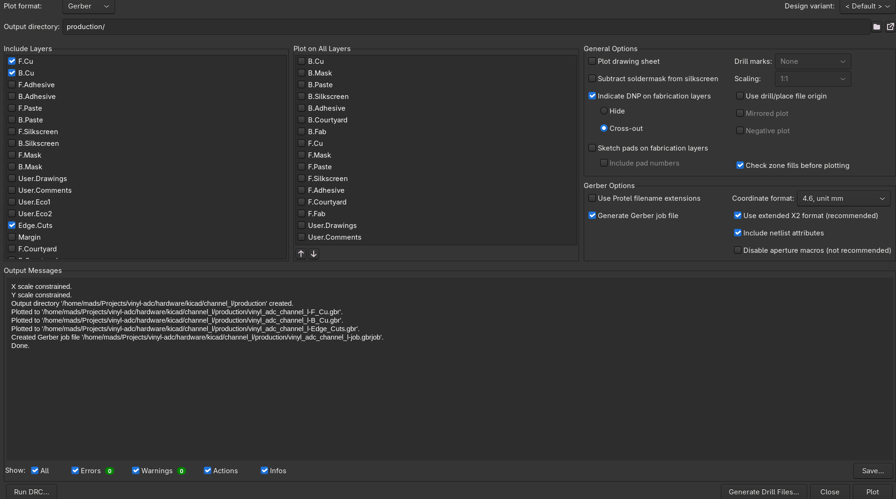
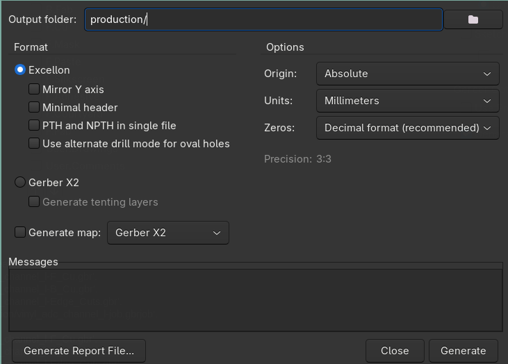
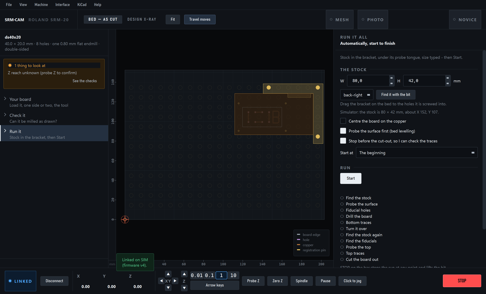
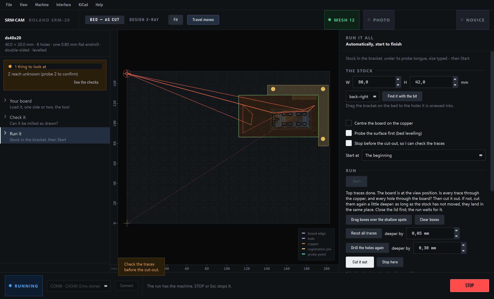
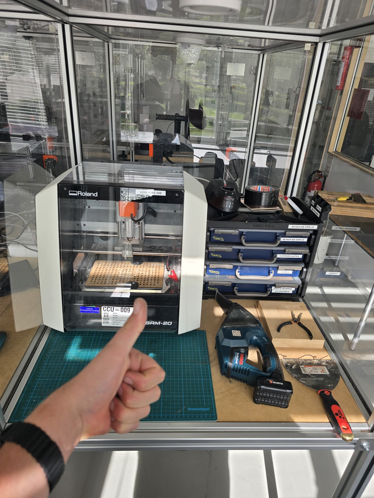
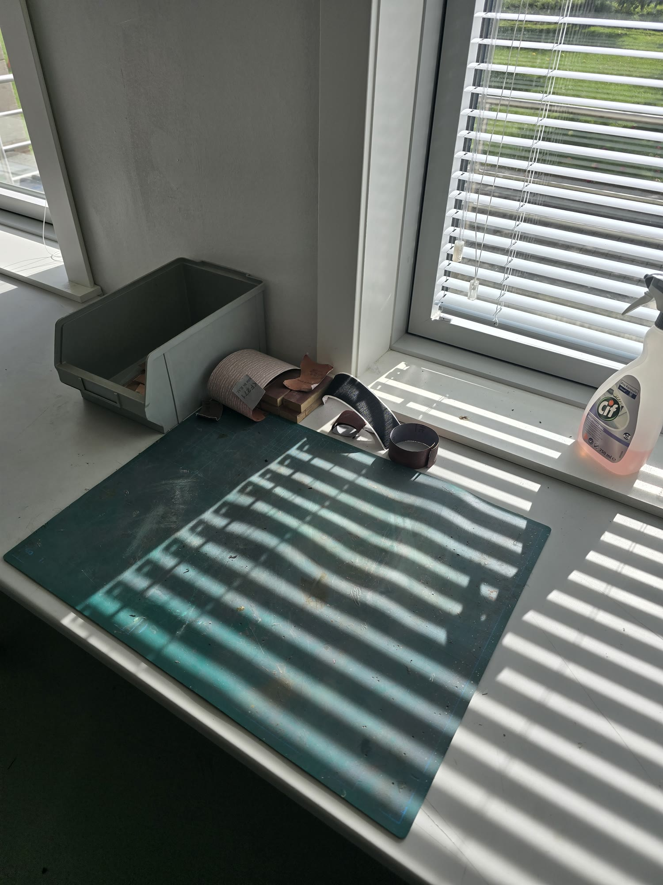
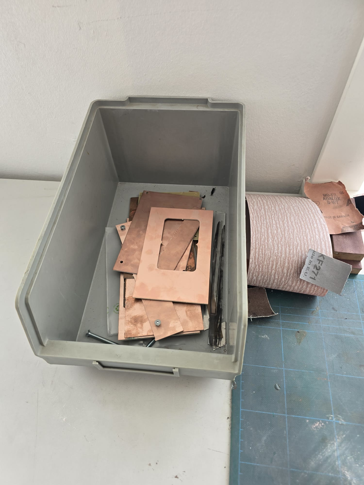

Mill a board
Load the board, push the copper into the corner, press Start. SRM-CAM does the rest and stops so you can check the board before it's cut out.
Export from KiCad
- Set the clearance before you route: at least 0.8 mm, the width of the bit. For finer boards, use the ball mill profile.
- Plot the Gerbers: B.Cu and Edge.Cuts, plus F.Cu for double-sided, into one folder. If KiCad asks to refill the zones, say yes.
- Generate the drill filesSame dialog, Generate Drill Files…: Excellon, millimetres, into the same folder. Keep both files if KiCad writes two.


That folder is all SRM-CAM needs. The build-area plugin and more are on Install & KiCad.
The steps
- Plug inBoth USB cables: black (Arduino) and white (mill). Put the 0.8 mm flat bit in the collet.
- Copper in the cornerSlide the sheet under the tongue and into the bracket. Hold it down: see holding the copper.
- Your boardOpen the Gerber folder from KiCad. A board with copper on both layers is set up as double-sided by itself.
- Check itRed means something won't mill as drawn. See spots that will be shorted.
- Run itType the sheet's measured W and H, and drag the board where you want it. Press Connect, close the lid, press Start.
- Check, then cut outThe board comes forward and the run waits for you. Check it, close the lid and press Cut it out.

It may open by itself, and you don't need to press anything in it. Keep the command set on NC Code and G54 X/Y at machine 0, 0. The run checks G54 before it cuts.
Holding the copper
| Sheet | Hold it with |
|---|---|
| Small (80 × 42 mm worked) | Clamps on the two free edges. |
| Big (160 mm) | Clamps, and masking tape stuck under the sheet, across the middle too. Three layers worked. |
- Clamps: fit one loosely, push it round by hand until it presses the sheet into the corner, then tighten. Don't push hard: that can bow the sheet.
- Test it: press on the copper near the middle. If it moves, the bit will move it too, and the traces will come out shallow.
- Print them: bracket and clamps.
What the run does
- Touches the copperOnce, near the bracket corner. It drops fast, then feels for the last few millimetres.
- Levels12 touches over the board, about a minute. Every cut follows the copper's real height.
- Drills and cuts the tracesEach job goes straight to the mill.
- Waits for your checkThe board comes to the view position.
- Cuts the board outThen the board comes forward again.
The check before the cut-out
Once it's cut free, a board can't be recut in place. A good channel shows dark substrate; bright copper in the groove isn't through. If you're unsure, use a multimeter.

| If | Do |
|---|---|
| It all looks good | Cut it out |
| Some traces aren't through | Drag boxes over the shallow spots, then Recut. Start with 0.05 mm deeper. Recuts add up. |
| All traces are shallow | Recut all traces, without drawing boxes. |
| Holes aren't through | Drill the holes again, 0.3 mm deeper. |
| You need to stop for now | Stop here. See picking a board up again. |
Close the lid after looking: the run waits for it before cutting again.
Shallow even with levelling?
The sheet is probably moving under the bit. The probe touches it lightly, but the cutter pushes it down. Hold it down better: see holding the copper.
Double-sided
Use copper-clad on both faces. The sheet must be about 14 mm bigger than the board each way, because the run drills its own reference holes outside the design.
- First sideSame steps as above. Then the board comes forward and the run asks you to flip it.
- Flip it left to rightNot front to back: the app can't detect a wrong direction. Push it hard into the corner, hold it down, close the lid and press It is flipped - continue.
- Second sideIt finds the reference holes, levels, cuts the top traces and stops for your check.
- Measure the sheet: the flip mirrors the board across the width you typed.
- If a hole isn't found: it's skipped. Fewer than 3 found stops the run before the top is cut.
- Holes aren't plated: joining the two sides is up to you, with wire for example.
- Try it first:
examples/double_sided_40x20has an F and a B that only read right after a correct flip.
Double-sided has made one good board on the mill so far, with fixes along the way. Keep a hand near STOP.
Stopping
- STOP or Esc stops the run at any point. If the bit is still low, raise it with Page Up.
- Opening the lid during a job also stops it.
Picking a board up again
Don't move the sheet. If the app was closed, load your saved setup first: before a run keeps the board's position. Then choose a step in Start at:
| Start at | For |
|---|---|
| Isolation traces | Drilling done, traces still to cut. |
| Find the fiducials (already flipped) | Double-sided, second side still to cut. |
| Check the board (traces are cut) | Straight to the check, cutting nothing first. |
How small can it go?
It depends on the bit. Pick the profile on .
| Use | When | Why |
|---|---|---|
| SRM-20 0.8 mm flat | Every gap is 0.8 mm or more: through-hole parts and larger SMD. | The everyday profile, and the faster one. |
| SRM-20 0.8 mm ball mill | Gaps under 0.8 mm: IC pins and small SMD. | The rounded tip cuts narrower when it only goes in 0.08 mm. |
Fit the same bit the profile names for the whole job. Neither profile stops to change bits.
What the ball mill can cut
Its channel is about 0.44 mm wide at the top of the copper. Tested on examples/torture_60x30, these all metered good. They're the finest on that board, so the real limit may be lower:
| Finest gap | Finest trace |
|---|---|
| 0.20 mm | 0.15 mm |
Copper isn't the limit on small parts: pads are. A gap under 0.44 mm gets one cut down the middle, which trims both pads. A pad with a cut on each side ends up no wider than the pitch minus 0.44 mm.
| Part | Pad left, across the pins | Use it? |
|---|---|---|
| SOIC 1.27, SOT-23, 0603 | Full size | Yes |
| 0402 | Full size, or trimmed by about 0.02 mm | Yes |
| TSSOP 0.65 | About 0.21 mm | Marginal |
| 0.5 mm pitch | About 0.06 mm | No |
- Keep levelling on: a ball's cut gets wider the deeper it goes.
- Holes and outline: the same bit does them, 1.9 mm deep. The drill starts straight after the traces without stopping, so stay at the machine.
- Not proven yet: how long a bit lasts, and pad widths measured in numbers at this setting. The flat bit hasn't been through the same test.
Good to know
- The bracket: it's set for the lab. If it's moved, drag the drawn one to the holes it's in, then re-check its corner. The app stops at Start if the board runs under the tongue.
- Clamps and thumbscrews: the app doesn't know where they are. Keep the board clear of them, and raise the bit before jogging near them.
- After changing to a longer bit: jog down close to the copper before a run or Probe Z, because the last height no longer holds.
- Each run's files:
Documents\SRM-CAM\runskeeps its jobs, log and height map. What the run made opens them. - Pro: has everything by hand, and Automatic with extras such as a dry run: .
Leave it as you found it
Vacuum the chips, close the cover, clear the bench, and put your offcuts in the scrap box. The people who use this mill are the only ones who maintain it; DesignBuildLab doesn't. A clean, tidy area is how we keep being able to use it.



Stuck? Troubleshooting.